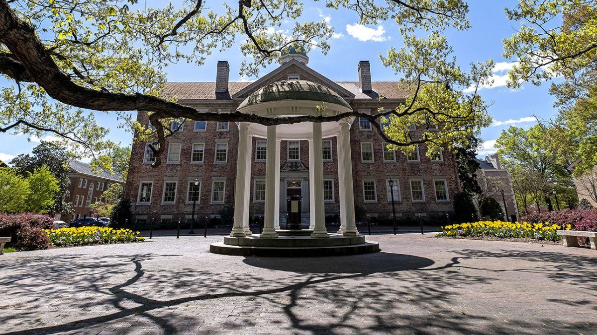

About Us
Crips in College is a national movement founded by Eleanor Bolton, Laura Saavedra Forero, and Karina Vasudeva with the intent of uplifting disability justice on college campuses.
Eleanor, Laura, and Karina all attend the University of North Carolina at Chapel Hill.
Their demands include:
- Train P2P drivers
- Ensure elevators meet the ADA requirements